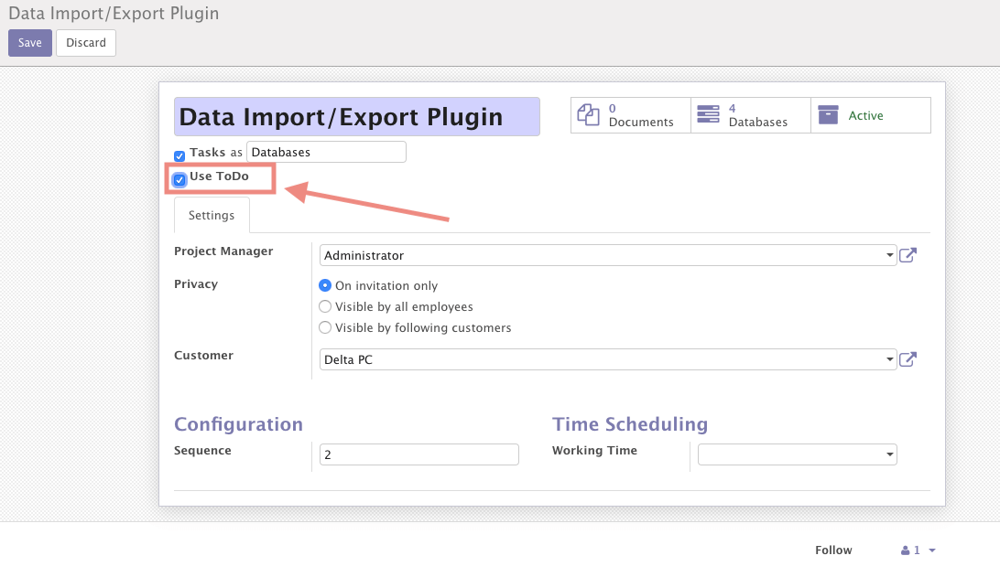
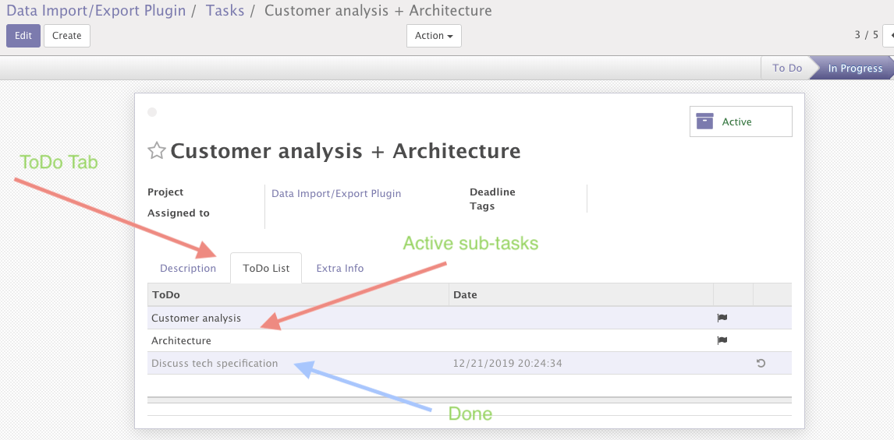

<section class="oe_container" charset="UTF-8">
    <div class="oe_row oe_spaced">
        <h2 class="oe_slogan" style="color:#875A7B;">ToDo list for project tasks</h2>
        <div>
            This module provides ability to add ToDo list for project tasks and mark list items as done step by step.
        </div>
        <h4>How to use:</h4>
        <div class="oe_span16">
            <ol>
                <li>install the module</li>
                <li>click edit project and mark the checkbox "Use ToDo"</li>
                <li>after enabling the option the tab "ToDO List" will appear in task form</li>
                <li>add new ToDo sub-tasks to list and mark as done when you complete the sub-task</li>
            </ol>
            <hr/>
            <h4>Project Form:</h4>
            
            <h4>Project Task Form:</h4>
            
        </div>
    </div>
</section>